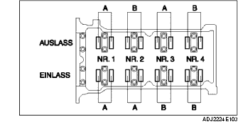

VENTILSPIEL PRÜFEN [ZJ, Z6]
B3E011012111W01
1. Die Batterieabdeckung ausbauen.
2. Das Massekabel der Batterie abklemmen.
3. Den Unterboden und Spritzschutz (R) ausbauen.
4. Den Luftfilter ausbauen. (Europa-Ausführung (LHD)) (Siehe LUFTANSAUGSYSTEM AUSBAUEN/EINBAUEN [ZJ, Z6].)
5. Das Luftfiltergehäuse entfernen und den Luftfilterdeckel zur Seite aus dem Weg räumen mit angeschlossenem PCM-Steckverbinder. (GB-Ausführung) (Siehe LUFTANSAUGSYSTEM AUSBAUEN/EINBAUEN [ZJ, Z6].)
6. Die Zündspule ausbauen. (Siehe ZÜNDSPULE AUSBAUEN/EINBAUEN [ZJ, Z6].)
7. Den Belüftungsschlauch lösen.
8. Die Zylinderkopfhaube ausbauen.
9. Das Ventilspiel messen.
-
(1) Die Kurbelwelle im Uhrzeigersinn drehen, damit Zylinder Nr. 1 im OT des Verdichtungstaktes steht.
-
(2) Das Ventilspiel an den mit A gekennzeichneten Stellen, wie abgebildet, messen.

-
• Falls die Vorgaben nicht erfüllt werden, den Stößel austauschen und das Ventilspiel auf den Mittelwert einstellen. (Siehe VENTILSPIEL EINSTELLEN [ZJ, Z6].)
-
Ventilspiel [bei kaltem Motor]
-
0,27-0,33 mm {0,0107-0,0129 in}
-
Hinweis
-
• Die Messwerte unbedingt notieren, um geeignete Austauschstößel auswählen zu können.
-
(3) Die Kurbelwelle 360° im Uhrzeigersinn drehen, damit Zylinder Nr. 4 im OT des Verdichtungstaktes steht.
-
(4) Das Ventilspiel an den mit B gekennzeichneten Stellen, wie abgebildet, messen.
-
• Falls die Vorgaben nicht erfüllt werden, den Stößel austauschen und das Ventilspiel auf den Mittelwert einstellen. (Siehe VENTILSPIEL EINSTELLEN [ZJ, Z6].)
-
Ventilspiel [bei kaltem Motor]
-
0,27-0,33 mm {0,0107-0,0129 in}
-
Hinweis
-
• Die Messwerte unbedingt notieren, um geeignete Austauschstößel auswählen zu können.
10. Die Zylinderkopfhaube einbauen. (Siehe Einbauhinweis für Zylinderkopfhaube.)
11. Den Belüftungsschlauch anschließen.
12. Die Zündspule einbauen. (Siehe ZÜNDSPULE AUSBAUEN/EINBAUEN [ZJ, Z6].)
13. Den Luftfilter montieren. (Siehe LUFTANSAUGSYSTEM AUSBAUEN/EINBAUEN [ZJ, Z6].)
14. Den Unterboden und Spritzschutz (R) einbauen.